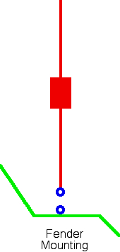
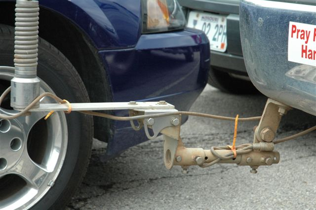

Basics
Many amateurs harbor the notion that DC grounding an antenna mount will magically act as, or replace, a ground plane. It will not. DC grounding the mount may establish an RF ground for the antenna's base — depending on the strap's length and width relative to the frequency of operation — but it is by no means a replacement for an adequate ground plane under the antenna.
The body of the vehicle and its capacitive coupling to the surface below act as the ground plane — and it's a lossy one. Typical ground plane losses vary between 2 and 10 ohms across 10 through 80 meters respectively, but in the real world they may reach 20Ω on 80 meters. It is also possible to have higher ground losses on 40 meters than on 80 meters. The primary cause is standing waves between the vehicle body and the surface beneath it. Do not confuse this with SWR.
Ground loss cannot be measured with a common ohmmeter, and it cannot be determined by measuring the input impedance of your antenna. Since ground losses dominate the efficiency equation, decreasing them by just one ohm can produce a significant increase in effective radiated power (ERP).
Excessive ground losses are directly related to the level of common mode currents. Common mode current causes RFI problems both inbound and outbound, and can drastically reduce the receiver's signal-to-noise ratio. Put another way, excessive ground losses can turn an otherwise efficient antenna system into an also-ran.
In a mobile scenario, there is one more ground to be concerned with: a proper RF ground return for the coax shield. RF must return to its source. It will do so in the path of least resistance — ideally within the coax cable itself. Improper mounting (atop long posts, extended brackets, magnet mounts, clamps, and luggage racks) causes an inordinate amount of RF to flow on the outside of the coax (common mode current), or down inadequately-choked motor control leads. Common mode current flow is the main cause of both egress and ingress RFI.
What Is a Ground Plane?
A vertical antenna is nothing more than half of a dipole — a monopole. Since RF must return to its source, we need something to replace the missing half. What we call that missing half is where confusion begins.
In a base station installation, we typically have a radial field in various configurations. In a mobile, we don't have that luxury. If we don't have a radial field, what do we have?

For one, we have the body of the vehicle. That body does capacitively couple to the surface under the vehicle, but technically it isn't a radial field. It's somewhat like installing a base station vertical using nothing more than a pipe driven into the dirt.
Here's the crux of the problem: Is the "ground" in question a DC ground, an RF ground, or a Ground Plane? The truth is, it can be any or all of these, which leads far too many operators to confuse one type with another.
Webster defines a plane as a flat and level, horizontal surface. Whether we're talking about a radial field or the body of a vehicle, that description fits. The rule to follow: place as much metal mass directly under the vertical antenna as possible — and make sure the coax shield connection is congruent with the start of that flat, horizontal surface. This is why the term "Ground Plane" isn't so far-fetched after all, and why running a DC or RF strap to a hard point nearby is not the same thing as providing a ground plane.
Your Average Vehicle
First of all, there isn't an average vehicle. Between two otherwise identical vehicles, there can be a great difference in the amount, type, and severity of RFI. For example, the egressed ignition RFI of one may be S9 while the other is S2. Even minor annoyances like fuel pump and AC fan hash vary greatly from model to model.
As a rule, unibody vehicles exhibit fewer problems with both ingress and egressed RFI. This is due mainly to the all-welded body construction. However, most still have sound-insulated undercarriages for the suspension, engine, transaxle, and exhaust systems — and these need to be bonded to maximize RF continuity. The Bonding article covers that in detail.
Aluminum-bodied vehicles require special techniques during installation of amateur radio gear, especially bonding. Failure to follow manufacturer recommendations can cause galvanic corrosion. Ford Motor Company, for example, has a bulletin outlining the requisite procedures for their aluminum-bodied F-150 series. Under no circumstances should the vehicle body and/or frame be used as the DC power ground return. Returns should always be directly to the battery or jump points. Failure to follow these guidelines can result in corrosion damage that is not covered under warranty.
Whether you use a monoband antenna or a remotely controlled multi-band one, once properly matched it will have a relatively low SWR. However, when underway, surface conductivity continually changes — as do ground losses and the resonant frequency of the antenna — resulting in erratic changes in SWR. This shouldn't cause any issues unless you try to use an auto-coupler to compensate for it.
Mounting Location Issues
The best place to mount an HF mobile antenna is in the center of the roof. This places it as far as possible from the surface the vehicle is sitting on, and as far as possible from the vehicle's vertical surfaces. With respect to system losses, any other position on the vehicle will exhibit more loss. DC or RF ground straps will not negate this.
The antenna, the vehicle, and the surface the vehicle is sitting on must be viewed as a system. Change one, and you change them all. This is why proper bonding and mounting are of prime importance. The objective is to make all of the vehicle's bolted-on components as RF-contiguous as possible — it matters little whether they are DC-contiguous.
Low mounting heights increase ground losses. The reason: a large portion of the return current is forced to flow in the lossy surface under the vehicle rather than through the vehicle's less-lossy superstructure. How much this affects efficiency depends on many factors, especially the quality of the antenna itself — coil Q, overall length, cap hat use, and so on. The key to maximum efficiency is placing as much metal mass directly under the antenna as possible.

Pickup Bed Mounting
There's a hotly debated issue about mounting mobile antennas down inside the bed of pickup trucks. Unless the antenna mast is very close to the pickup bed wall (well less than an inch), the reduction in performance is minimal. The capacitance between the bed wall and the antenna mast seldom exceeds 2 or 3 pF. Even on 10 meters, this amount of capacitive loading is almost unmeasurable. Where you can get into trouble is mounting the antenna coil too close to sheet metal — in that case, the reduction in performance is easily measured, even with an SWR meter. Keep the coil as free and clear of sheet metal as possible.
Odds & Ends
Some misguided mobile operators believe that adding a "counterpoise" to their mobile antenna will increase efficiency. This so-called counterpoise — a misnomer — is typically a spirally-wound, ham-stick-type antenna. The truth is, it's a waste of resources. The effectiveness is so slight, you couldn't measure it with laboratory-grade equipment. The same can be said of "V" configurations of two identical mobile antennas.
Adding wires across the bed opening of a pickup, or running a ground strap around the frame, are ineffective substitutes for proper antenna mounting. Here is a useful perspective: a Greyhound bus exhibits about the same ground loss as an average passenger vehicle. No amount of straps and wires attached to the outside of that structure will turn it into a low-loss ground plane. The antenna mounting location and height dominate the result.
Modern Considerations
The ground-plane physics described above apply equally to any vehicle — but the materials, construction methods, and onboard electronics of post-2015 vehicles introduce complications worth understanding before you install anything.
Composite and Aluminum Panels
Carbon fiber, fiberglass, and sheet molding compound (SMC) are not electrical conductors. Panels made from these materials cannot be bonded into your ground plane because they are not part of your ground plane. Period. Pickup trucks with composite beds, carbon-fiber body panels, or fiberglass hoods effectively have a smaller conductive ground plane than their physical footprint suggests. No ground strap can compensate for this.
Aluminum-body vehicles are still conductive, but require tin-plated copper braid and oxide-inhibiting compound at every bonding connection to avoid galvanic corrosion. See the Bonding article for the details specific to aluminum construction.
Route-Dependent Ground Losses
As the vehicle moves from pavement to gravel to grass to dirt, the capacitive coupling between the vehicle body and the surface below changes continuously. Ground losses on 40 meters over dry desert gravel will be substantially higher than the same vehicle over wet pavement. If your SWR wanders while driving, this is the likely cause — not an antenna problem. Do not chase it with an auto-coupler; the coupler will hunt continuously and accomplish nothing useful. Design your system to tolerate a reasonable variation in ground impedance and leave it alone.